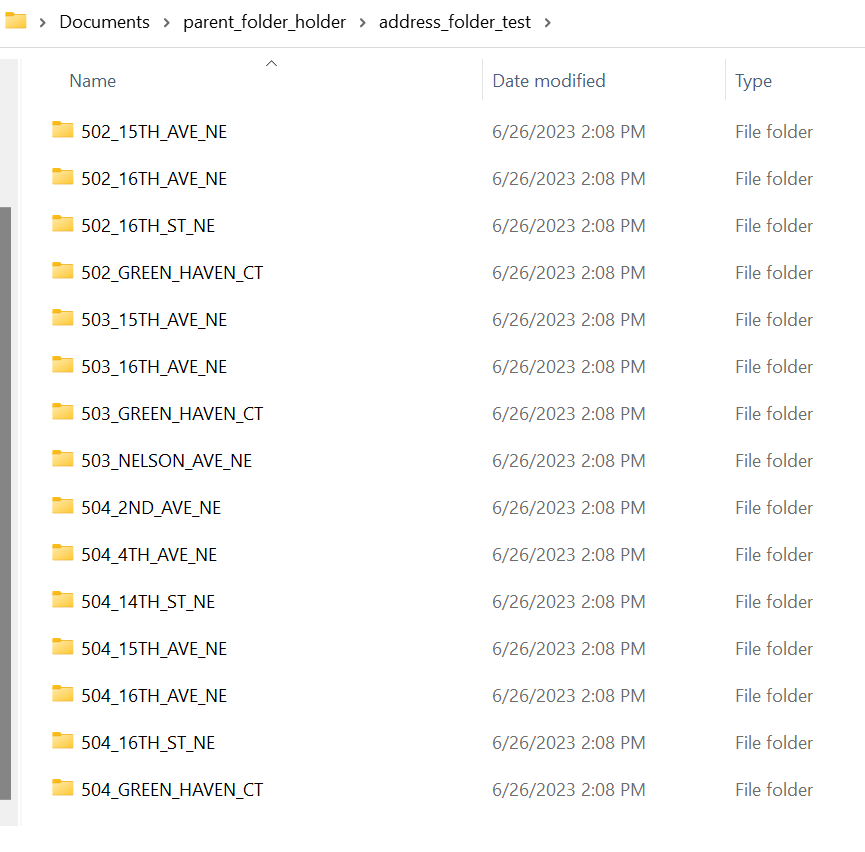

Image Storage and Database Updating
First I had to resort Google images into folders that could be processed by my city_evaluator.py file. I made a diagram to show how the images are being stored below.

I made an image sorting algorithm that takes a source such as Google’s images then sort each image based on address and make a folder for each address. The reason each town folder has folders with address names is so that when I pull in winvest images as I do below I can have multiple images for the same address to run through the AI models. The next images just show the parent folder and how the folders are stored same as the above graphic.

An update from last week was that instead of printing to a test file I am now able to update each CSV with information needed. I added a test_failed category to show which image quality model kicked the address back and I added the title of the image used for the evaluation. Also added is the gutter model and a space for the roofing model. The first image below shows what happens when no image is found for an address. The second is a picture of New Hampton being evaluated. The reason it is missing multiple values is because the Google streetview had a lot of missing images for New Hampton. I added a third image which is Independence which is filled out from the later part of the week so it is full and has more attributes.
I made a full guide of how to recreate the results of this project code wise here. I plan to do more before the summer finishes but this guide covers how to scrape images, clean data, make urls, scrape the Google API for streetview images, make models, implement models, and finally export results of models to a CSV for each address. Our team also made the teaser video for our AI housing project.
I have also made an algorithm that will rename photos from Winvest so that I can sort it into the parent folder and have more than just Google images to evaluate. A lot of this week has been updating and improving the code from last week so that everything works better. On my todo list includes adding the roof model, retrain existing models to improve accuracy, and try to make heatmaps by the end of the project.